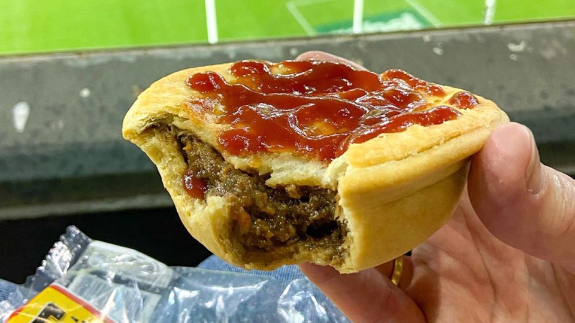

Four 'n' Twenty Pie
Home Page

Description
The classic Four'n Twenty pie is filled with mutton and beef (a minimum of 25%, per Food Standards Australia New Zealand regulations),
mostly shoulder meat, in a spiced gravy with carrot and onion.
Ingredients
- 1 lb sirloin steak, cut into 1-inch cubes
- 2 tbs Oyster Sauce
- 1 tbs soy sauce
- 1 tbs rice vinegar
Steps
- Head into ChatGPT here
- Login or sign up for an account if you haven't already
- type in how to cook bo luc lac
- copy the recipe